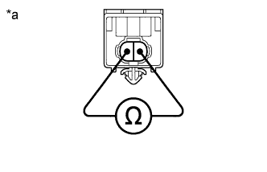

WIRELESS DOOR LOCK BUZZER > INSPECTION |
| 1. INSPECT WIRELESS DOOR LOCK BUZZER |
|  |
Measure the resistance according to the value(s) in the table below.
| Tester Connection | Condition | Specified Condition |
| 1 - 2 | Always | 285 to 315 Ω |
| *a | Component without harness connected (Wireless Door Lock Buzzer) |